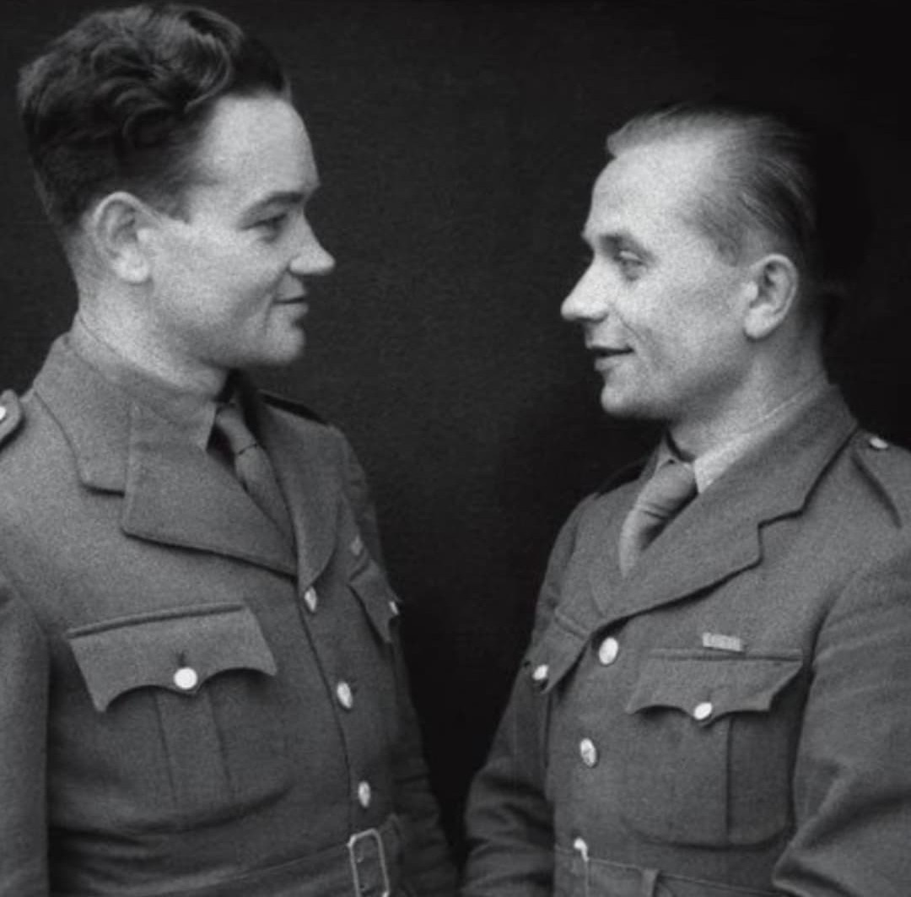
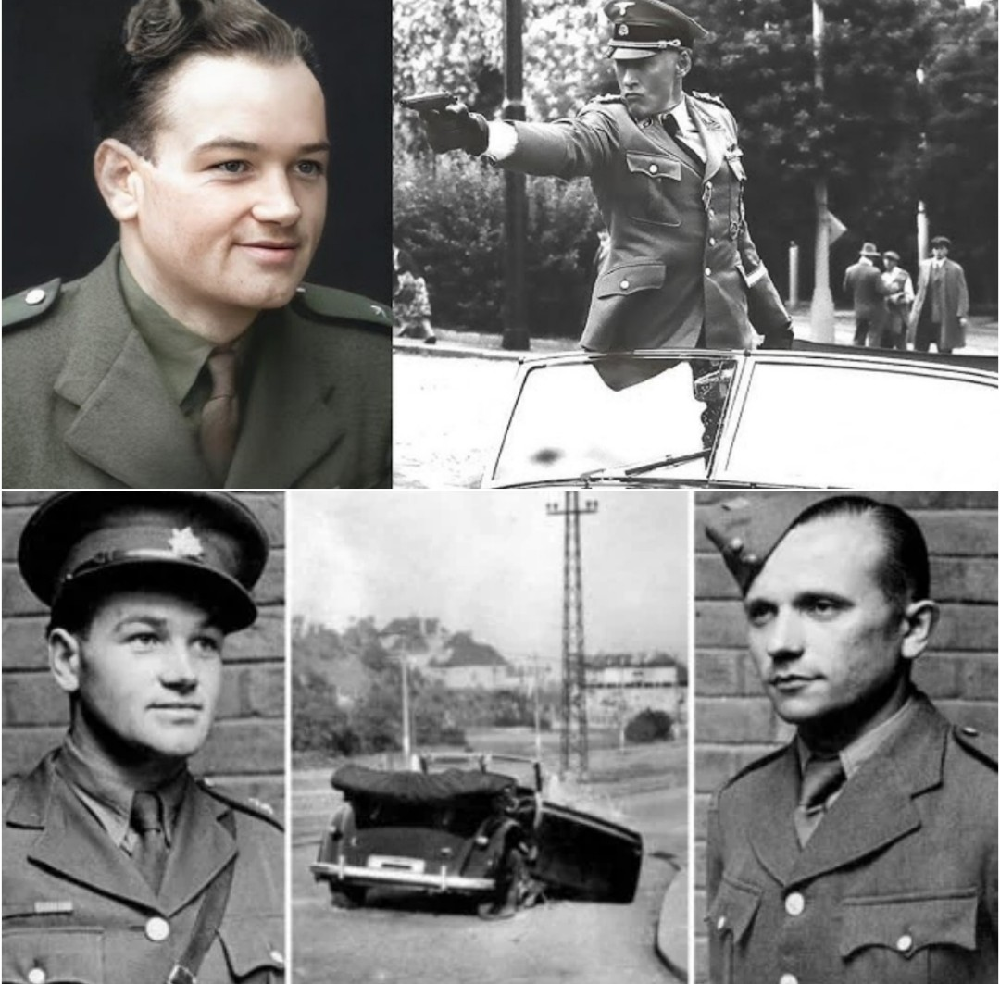
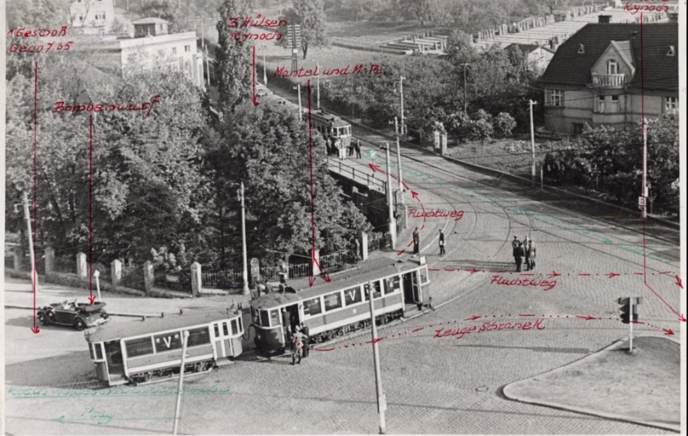
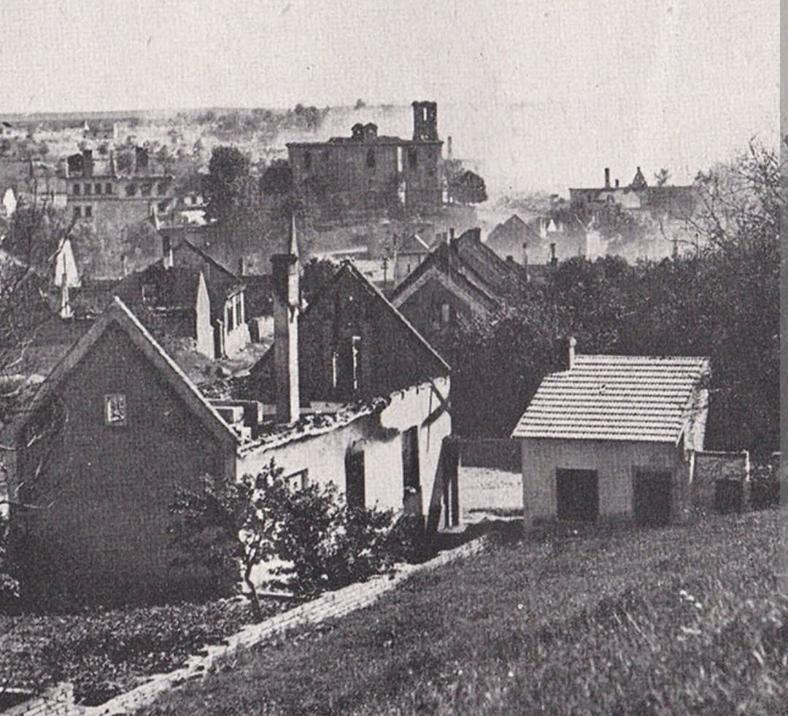
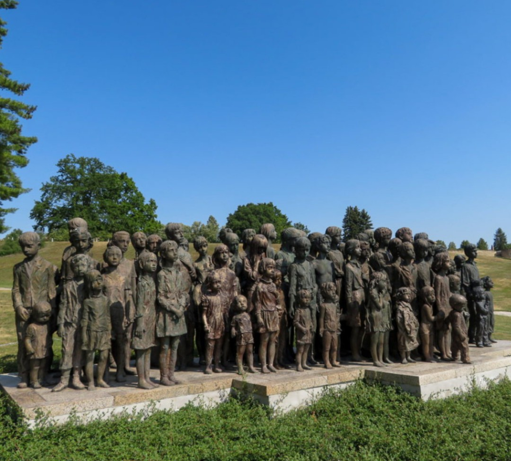

L’opération Anthropoïde est l’une des actions de résistance les plus audacieuses de la Seconde Guerre mondiale. Menée par deux parachutistes tchèques formés par le SOE britannique, elle vise à éliminer Reinhard Heydrich, chef du RSHA, architecte de la Shoah et dirigeant de la Gestapo.
L’attentat du 27 mai 1942 réussit, mais entraîne des représailles nazies d’une brutalité extrême, dont la destruction des villages de Lidice et Ležáky.

Le gouvernement tchécoslovaque en exil et le SOE décident de frapper un coup symbolique : assassiner Heydrich.

Parachutés près de Prague en décembre 1941, ils sont cachés par la résistance locale.

Il meurt le 4 juin 1942 d’une septicémie. L’opération est un succès total.

Les villages de Lidice et Ležáky sont rasés :
Les agents sont dénoncés et se réfugient dans l’église Saints-Cyrille-et-Méthode. Le 18 juin 1942, environ 700 SS attaquent :
Les résistants se battent jusqu’à la dernière balle et se suicident pour ne pas être capturés.
